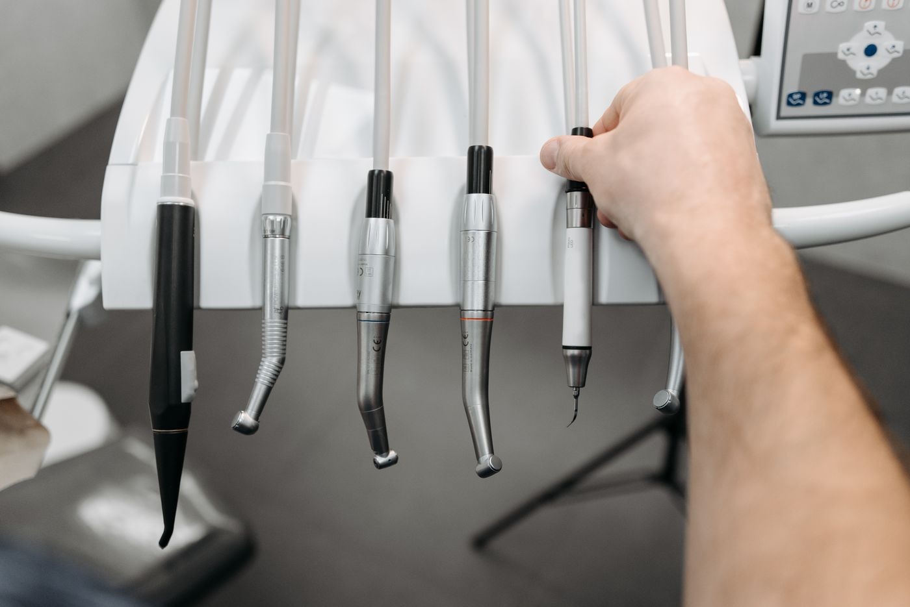
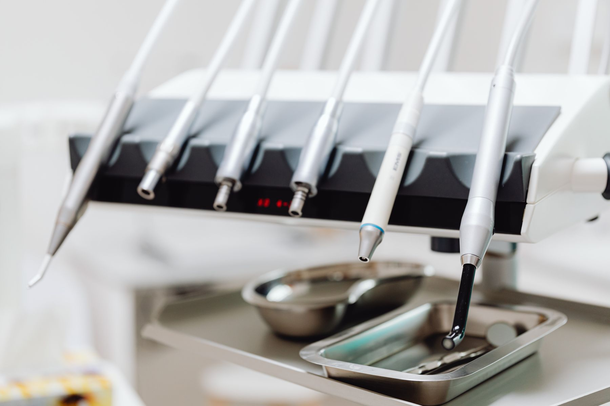
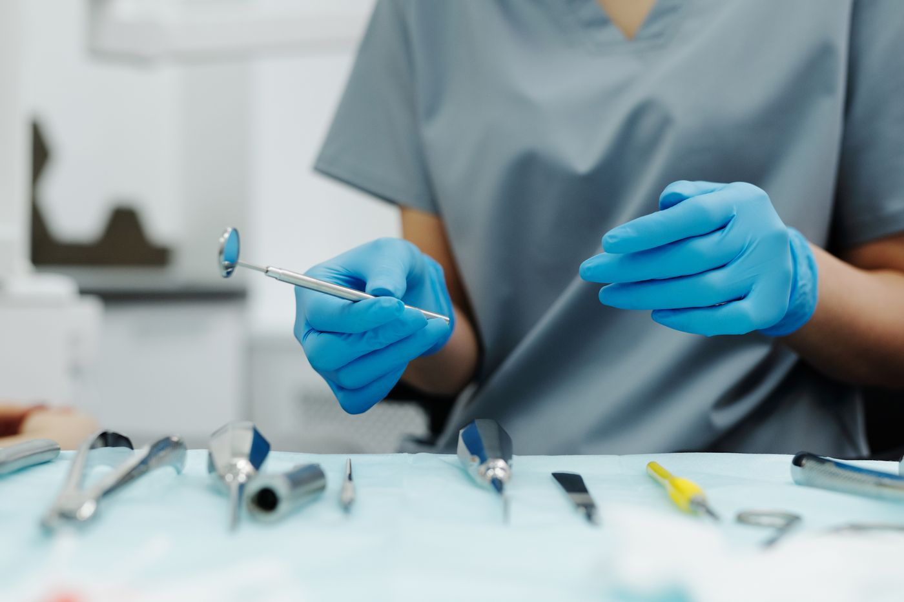

Dent Design
Șos. Mihai Bravu 327, Sector 3

Din 2005,
pe Mihai Bravu.
21 de ani la aceeași adresă 5 oameni Sector 3, zona Dristor
Unde e
Șos. Mihai Bravu 327,
blocul 54

Ce se face aici
Lista completă,
fără prescurtări.
Consultație și plan
Prima vizită și devizul.
Detartraj și periaj
Igienizare profesională.
Obturații fizionomice
Plombe de culoarea dintelui.
Tratament de canal
Endodonție.
Coroane și punți
Protetică fixă.
Urgențe
Durere acută.
Lista se confirmă cu cabinetul înainte de publicare.
De cât timp
21
de ani la aceeași adresă.
Cabinetul a fost înființat pe 13 iulie 2005 și funcționează de atunci în același loc, pe Mihai Bravu. Douăzeci și unu de ani în care strada s-a schimbat de câteva ori, iar numărul de la intrare a rămas 327.
Dent Design Concept SRL
Înființată 13.07.2005
J40/12259/2005
CUI 17777487
CAEN 8623, asistență stomatologică
Sursa: Registrul Comerțului

Cine lucrează aici
5
oameni.
Un cabinet mic, cu aceiași oameni de la o programare la alta. Numele și specializările se completează împreună cu cabinetul.
Programare
Un telefon
și o oră.
Se spune ce doare sau ce trebuie verificat, și se stabilește o oră.
- Telefon
- De confirmat cu cabinetul
- Program
- Luni până vineri, orele de confirmat
- Adresa
- Șos. Mihai Bravu 327, bl. 54, sc. 2, et. 2
Sector 3, București - Firma
- Dent Design Concept SRL
CUI 17777487